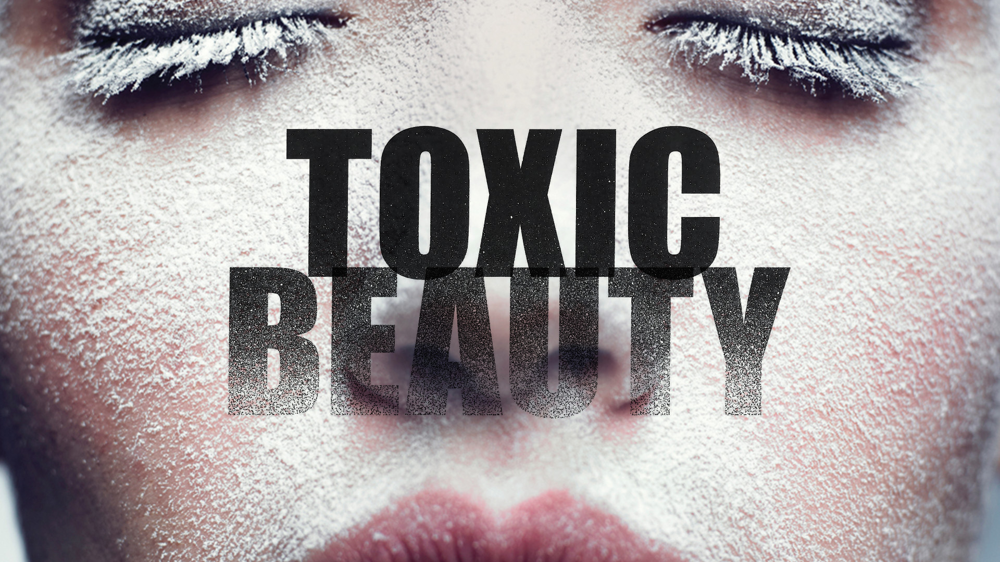
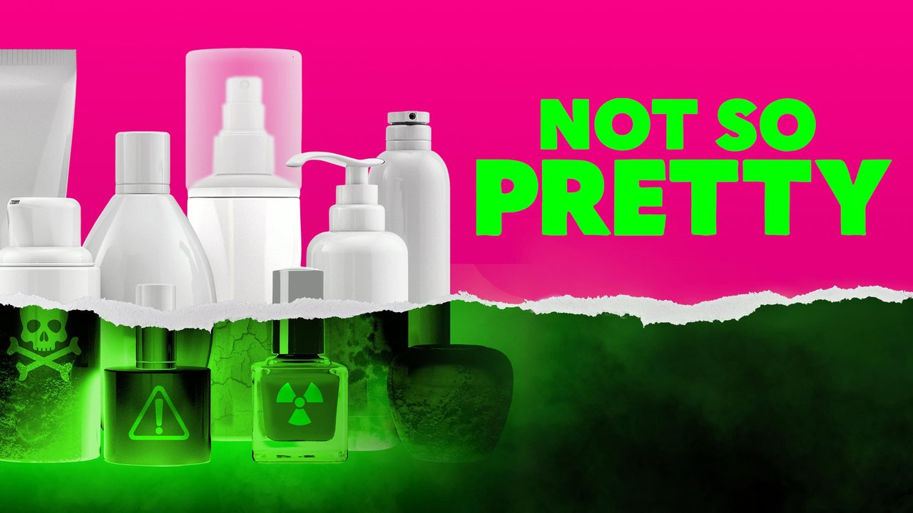
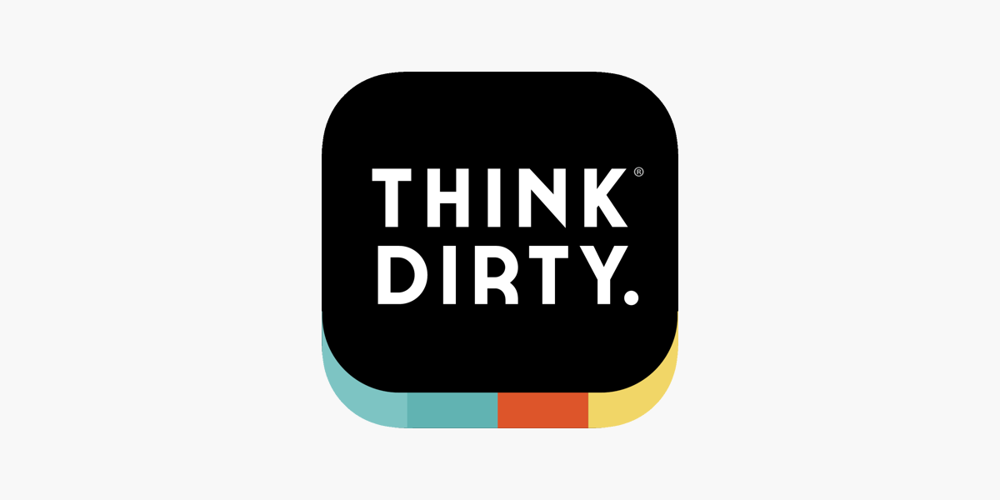
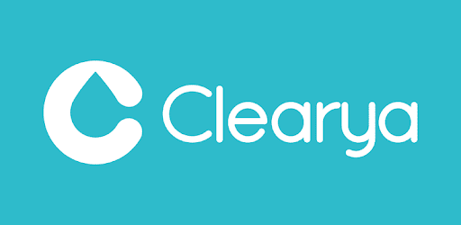
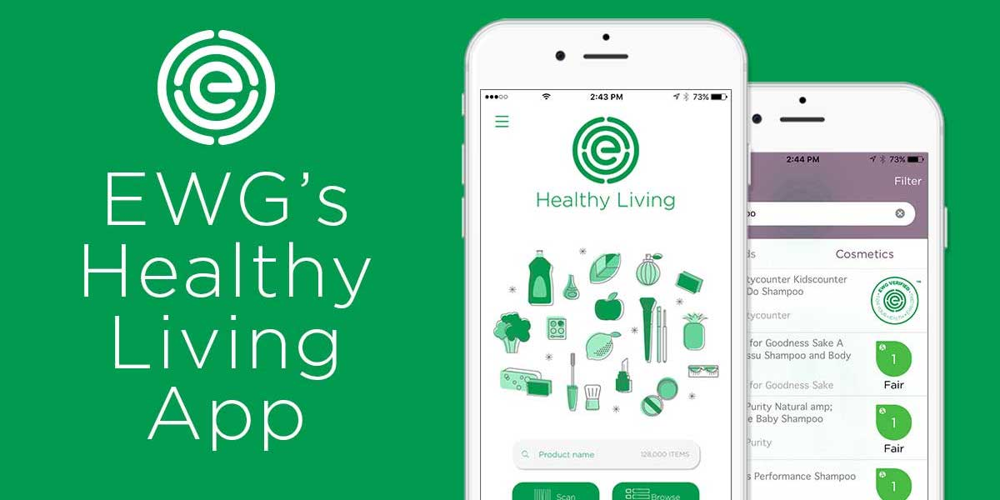
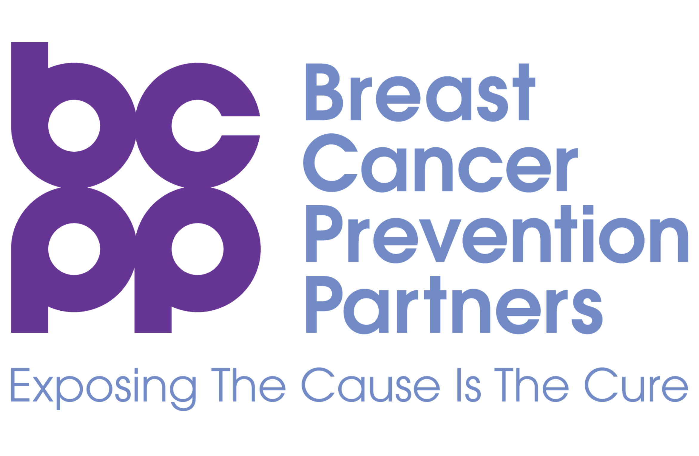
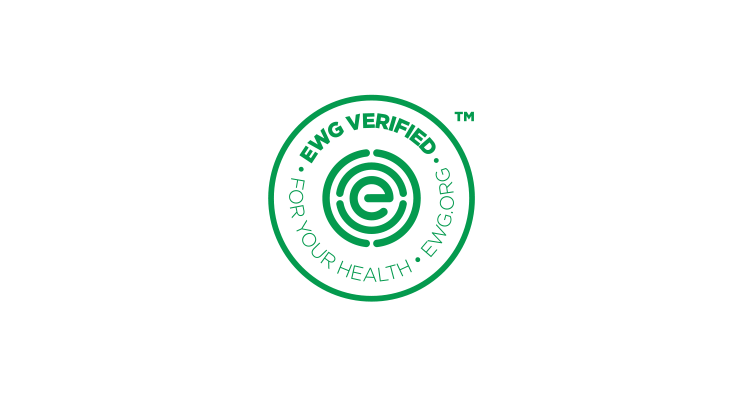
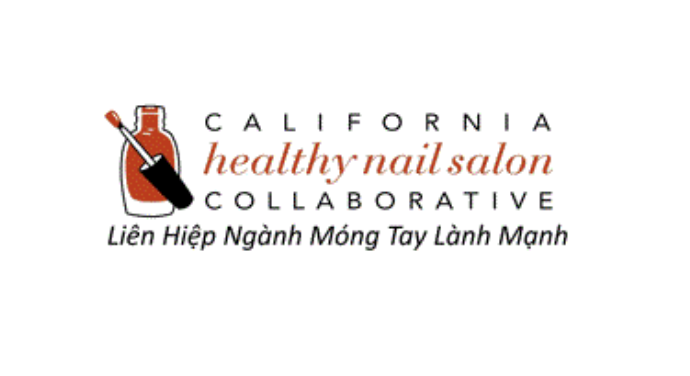

Toxic Beauty "Narrated by Keke Palmer, Not So Pretty is the first-ever comprehensive large-scale investigative expose of the trillion-dollar cosmetics, beauty and personal care industry. Celebrated and groundbreaking filmmakers Kirby Dick and Amy Ziering (Allen v. Farrow, On The Record, The Hunting Ground) take this unregulated industry to task via rigorous investigations, incisive wit and emotional storytelling to inform audiences of the hidden hazards of cosmetics and safe, budget-friendly alternatives for their daily products."

Not So Pretty "Each morning we spritz and slather ourselves in over 100 different chemicals – yet the cosmetics and personal care industry in North America is not required to prove an ingredient is safe for human health before it is on the shelves. So when we run a bath, lather cream for a shave, carefully apply our makeup or deodorize our underarms, we could be exposing our bodies to toxic chemicals. Hormonal disruption in baby boys, developmental delays, ADHD, low sperm count in men – the effects aren’t pretty. Toxic Beauty is a documentary feature that follows the class action lawsuit against Johnson & Johnson and the plaintiffs; women fighting for justice in a race against time."
Apps

Think Dirty ‘Think Dirty’ is the easiest way to learn ingredients in your beauty, personal care, and household products. When you scan a product barcode, the app will give you easy-to-understand info on the product, its ingredients, and shop cleaner options.

Clearya When you shop online, ‘Clearya’ will notify you when there are unsafe ingredients in your makeup, personal care, baby care, cleaning, and other products, and helps you find safe alternatives.

EWG When you scan a product through the EWG app, you can review ratings for more than 120,000 food and personal care products and pick better choices.
Organizations

Breast Cancer Prevention Partners Founded in 1992, BCPP is a national organization working to eliminate toxic chemicals and other environmental exposures that lead to breast cancer. It works with communities that are most severely affected by the environmental factors linked to breast cancer, educates and takes action using science, presses businesses to make their products safer, and passes health-protective laws.

Environmental Working Group Since 1993, the EWG has drawn attention to outdated legislation, harmful agricultural practices, and industry loopholes that endanger human health and the environment. Its mission is to empower people with breakthrough research to make informed choices and live a healthy life in a healthy environment.

California Healthy Nail Salon Collaboration Founded in 2005, this organization is a statewide grassroots organization that addresses the socioeconomic difficulties that low-income female Vietnamese immigrant and refugee workers face regarding health, the environment, reproductive justice, and other issues.